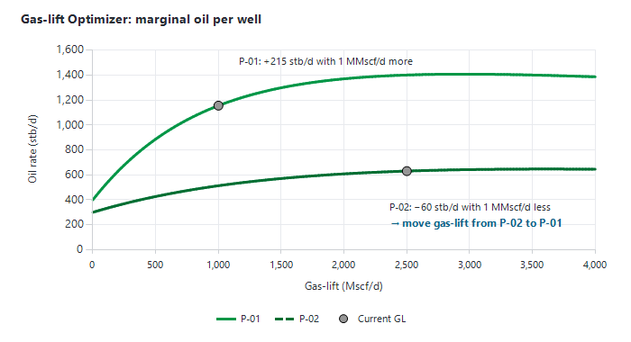

|
Producers dashboard (Production Monitoring)
1. Opening the Producers dashboard
Click "Producers" in the "Monitoring" group of the main ribbon, in the "Monitoring" group of the Decline Curves window, or on the ribbon of the Asset dashboard. The window "Production Monitoring <asset>" opens maximised on the first well of the list. A progress bar runs while a well loads.
2. Layout
•Left — the "Location" list, the "Reservoir" list, the well list and the well status list.
•Top — the "Production Parameters" box, the "Last Well Test" box and the well status card.
•Centre — the main chart (about two thirds of the width), with the buttons "Settings", "chart library", "2 years", "5 years" and "All time" above it.
•Right — three smaller charts, each with a ">" button to cycle to the next available chart (section 7).
3. Selecting a well
•Click a location and / or a reservoir (or "All") to filter the well list. The list contains the oil and gas producers of the monitoring asset model.
•Click a well, or move through the list with the Up / Down arrow keys, to load it.
•The status list shows the well's status: "Available" (green), "Broken Well" (red) or "Abandoned" (dark grey). Changing it saves the new status in the asset model immediately; the status is used by the shortfall calculations and by the Asset dashboard.
4. Time window
The charts end on the asset's latest allocated date. They open on the last 2 years (5 years for a gas asset; the whole history if the latest data are more than a year old). Use "2 years", "5 years" or "All time" to change the window. When a forecast or simulation is plotted, the time axis is extended to its last date.
For assets with real-time monitoring, the "Window" box of the Settings panel adds a "High Frequency" mode next to "Daily": choose the "Sampling:" (from 12 hrs down to 01 sec, default 05 min) and the "Number days:" (default 7). Precept refuses requests of more than 200,000 points; increase the sampling interval or shorten the window.
5. The main chart and the Settings panel
Click "Settings" to open the panel over the chart; move the mouse back onto the chart to close it. Tick what you want to see:
|
Box
|
Ticks
|
Drawn as
|
|
"Parameters"
|
"THP", "THT", "FP", "BHP", "BHT", "Gas-lift", "CHP", "Choke"; for ESP wells also "PDP", "Frequency", "Motor current".
|
Lines (daily well parameters). Temperatures, frequency and motor current on the right axis. Gas-lift only for gas-lifted wells.
|
|
"Well Test"
|
"Well Tests", then "Oil", "Water", "Gas", "Liquid", "BSW", "GOR".
|
Points ("Oil Test", …). Hidden when the well has no tests.
|
|
"Allocated"
|
"Allocated Production", then "Oil", "Water", "Gas", "Liquid", "BSW", "GOR".
|
Areas ("Oil Allocated", …); dots when the well has no tests.
|
|
"Forecast"
|
A scenario list (opens on the most recently modified scenario), "Forecast", then "Oil", "Water", "Gas", "Liquid", "BSW", "GOR".
|
Lines ("Oil Forecast", …) — the well's deterministic forecast in that scenario.
|
|
"Simulation"
|
"Reservoir Simulation", then "Oil", "Water", "Gas", "Liquid", "BSW", "GOR", "BHP".
|
Lines ("Oil sim", …) — reservoir-simulation results for the well.
|
|
Other ticks
|
"Reservoir pressure", "Comments".
|
Reservoir pressure at datum as points; comments as vertical labels (click a label to open the comment).
|
Your ticks in the Parameters, Well Test, Allocated, Forecast and Comments boxes are saved for your user and restored the next time you open the dashboard.
Also in the Settings panel:
•"Zoom on:" — "Primary Y axis" or "Secondary Y axis" chooses which vertical axis a drag-zoom acts on.
•"Plot nearby Well" — choose up to two other wells ("Well:") and one parameter for each, to overlay them on the chart. For a producer: THP, THT, FP, BHP, BHT, Gas-lift, CHP or Choke; for an injector: THP, BHP and its injection rate.
"chart library" offers ready-made sets of ticks: "Default" (your saved ticks), "Allocated vs Well Tests", "Forecast vs Well Tests" and "History Match QC".
Left axis: pressures, rates, GOR and choke, in the asset's units; right axis: temperatures and BSW. Before the first daily parameter, older values are filled from the well tests.
Chart gestures (zoom, "⟲ Unzoom", Format chart, Series style, copy to clipboard) are described in Monitoring module, section 4. On this dashboard, double-click or Esc also unzooms, and a right-click on an empty part of the main chart resets the zoom. A click on a point of the main chart fills the "Production Parameters" box with that day's values.
6. Information boxes
•"Production Parameters" — the latest values ("Date", "THP", "THT", "FP", "BHP", "BHT", "Gas-lift", "CHP", "Choke", and "Frequency" / "PDP" for ESP wells). Missing values are left blank.
•"Last Well Test" — "Date", "Oil", "Water", "Gas", "Liquid", "BSW", "GOR", "Choke" of the latest test. Hidden when the well has no tests.
•Well status card — shown when the well has open actions or recent EBS events: a blue "Ongoing action" pill (click it to open the Action Tracker for the well, or click an action to open it) and chips for the EBS events of the last 24 hours, "Surveillance" in red and "Optimization" in green.
7. Right-hand charts
The three right-hand panels show diagnostic charts. Click ">" on a panel to replace it with the next chart that applies to the well (gas-lift charts only for gas-lifted wells, ESP charts only for ESP wells).
•"Production" — the current year's daily allocated "Oil Production" or "Gas Production" (list Oil / Gas) with the "Oil Shortfalls" / "Gas Shortfalls" stacked in grey; the tooltip gives the downtime reason. Shortfalls are calculated as on the Asset dashboard (see Asset dashboard, section 9).
•Well-model charts — "Actual BHP vs Prosper BHP", "VLP / IPR (last 1000 days)", "System calculation", "Quicklook", "Gas-Lift Performance curve", "THP Performance curve", "ESP Performance", "ESP Performance curve". They compare the measured data and well tests with the well model. See Nodal analysis and well models.
•"Virtual Meter" (real-time assets) — the rates estimated by the well model from the measured pressures ("System", "VLP", "IPR") against the "Allocated" rate; list Liquid / Oil / Gas.
8. Ribbon buttons
8.1 "Raw Data" group
•"Production Parameters", "Well Test", "Allocated Production", "Forecast", "Shortfalls", "BHP Prosper", "Reservoir Pressure" — open the corresponding data of the well as a table. "Well Test" appears only if the well has tests; "Reservoir Pressure" only while the "Reservoir pressure" tick is on.
•"All Comments" — the comments of the well.
•Real-time assets only: "Tags" (historian tag of each well parameter), "Inhibit EBS actions" (switch individual EBS rules off for a well) and "Alarms Threshold" (minimum, maximum and maximum amplitude per parameter, used by the EBS threshold alarms).
•"Update Well model" ("Update Prosper model" when the asset uses Prosper models) — opens the Well Model Update window for the current well. See Nodal analysis and well models.
8.2 "Reservoir Monitoring" group
•"Pattern performance", "Pattern performance 2", "Plots", "Maps" — reservoir management plots and maps; see Reservoir management plots.
•"Build-up Analyzer", "View All Build-ups" — see Build-up and pressure transient analysis.
•"Gas-lift Optimizer" — section 9.
•"3D Model Visualiser" — see 3D Model Visualiser.
8.3 Targets and documents
•"Set targets" and "Producer target history" — section 10. This group appears once the asset has at least one producer target.
•"Map" — the map centred on the well (when a maps folder is configured).
•"Completion drawing" — opens the well's completion drawing file (when a completion-drawings folder is configured).
•"Logs" — opens the well's log file.
•"Well Profile" — opens Monitoring Plots on the well profile (see Reservoir management plots).
9. Gas-lift Optimizer
"Gas-lift Optimizer" opens a chart of the gas-lift performance curves (oil rate against gas-lift rate) of the gas-lifted wells, with each well's current operating point. It helps you see by eye which wells would gain most oil from more gas-lift and which could give gas-lift back. It does not change anything in the field or in Precept.
1.Click one or more locations (or "All") in the location list; the well list fills with the gas-lifted producers.
2.Select the wells to show. Each well's curve is drawn in green, its current point ("Current GL") in grey, labelled with the well name.
3.Read the table: "Current GL", "Delta Oil with 1 MMscf/d less" and "Delta Oil with 1 MMscf/d more" — the oil lost or gained by moving 1 MMscf/d of gas-lift away from, or to, that well.
4.Optionally switch the list from "vs Gas-lift" to "vs Total Gas" (gas-lift + formation gas on the X axis); a dashed tangent ("<well> slope") then shows the local slope of each curve.
The optimum allocation of a limited gas-lift volume is reached when the extra oil per extra unit of gas-lift is the same for every well: move gas-lift from the wells with the smallest "more" / "less" deltas to those with the largest. The current gas-lift comes from the latest hourly data (or the latest daily parameters); the curves come from the well models (see Nodal analysis and well models). Wells without a curve show 0. For a field-wide optimisation under facility limits, use the Optimizer of the Asset dashboard.

Figure 1 — Reading the Gas-lift Optimizer: the oil gained with 1 MMscf/d more gas-lift (or lost with 1 MMscf/d less) is read on each well's curve at its current point.
10. Targets
Targets are the operating set-points agreed for a well. They are drawn on the Asset dashboard's "Actual vs Target" chart and checked hourly by the EBS (±10 %) on real-time assets.
1.Select the well, then click "Set targets". The window "Set Producer targets" opens with the well name at the top.
2.In "Well Parameters", enter the "THP :", "BHP :" and "Gas-lift:" targets you need (all optional), in the same units as the well's daily data. Add a "Comment:".
3.Click "Submit". Each submission is stored as a new dated entry, so the target history is kept; the latest entry is the active target.
"Producer target history" lists all the targets of the well. Injector targets are set from the Injectors dashboard.
|